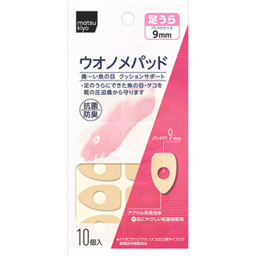
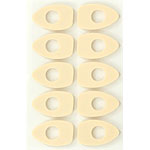

返回列表
产品名称：matsukiyo ウオノメパッド 足うら用

横山製薬 matsukiyo ウオノメパッド 足うら用 １０個入
メーカー 横山製薬
JANコード 4987365040079
商品の特徴
痛～い魚の目 クッションサポート
・足のうらにできた魚の目・タコを靴の圧迫痛から守ります
抗菌防臭
アクリル系発泡体
肌にやさしい粘着剤使用
★「イボコロリ」「ウオノメコロリ」液タイプとの耐薬品性確認済み
成分・分量
用法及び用量
＜用途＞
足のうらにできた魚の目やタコを靴の圧迫痛から守ります。
＜使用方法＞
足をきれいに洗い、よく乾かしてから魚の目など痛い部分がパッドの穴の中央になるように直接皮膚に貼ってください。